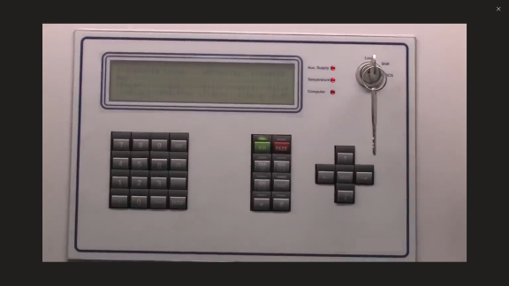

È importante tenere sempre presente che una turbina eolica è unaimpianto di produzione di elettricitàprogettatooperare autonomamente. In altre parole, è una pianta che non richiede alcuna presenza umana per operare. Questo significa che deve averesistema di controlloche è adeguatamente programmato per tenere conto di tutti gli incidenti che possono verificarsi, come
• fenomeni esterni, come venti di forza dell'uragano, colpi di fulmine, temperature eccessive o molto basse, o
•incidenti generati dalla rete elettricaa cui è collegato (insufficienza di fase, tensioni di linea al di fuori dei limiti, ecc.), così come
• incidenti interni, quali componenti idraulici rotti, errori di calibrazione del sensore o rottura, vibrazioni eccessive, problemi di cuscinetto, aumento della temperatura del generatore, ecc.
Il controller è programmato per rilevare tutti questi incidenti in modo tempestivo e rispondere a loro. Ciò significa che il modo di interagire con una turbina eolica è comunicando con il suo controller, che è fatto attraverso specificoterminali dati. Questi possono essere inseriti nel pannello elettrico, come mostrato nella figura seguente,

Oppure possono essere separati, in un terminale portatile, come nella figura seguente.